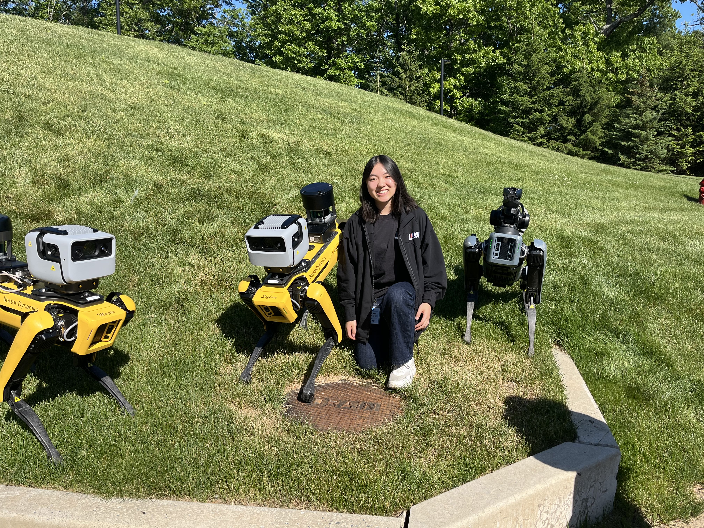

| Kate Xu |

This summer, I was a mechanical engineering intern on the Atlas hardware team, working on the actuators for Boston Dynamics' humanoid robot Atlas. During my internship, I designed and conducted two major studies to inform decisions for the mass-production actuators: a thermal study to select the thermal interface material (TIM) on the actuators, and an adhesion study to determine the PCB washing process for all the boards on the actuators. Below is a summary of the work I did at BD - though I'm omitting some detail and specificity in order to respect Boston Dynamics IP.
Adhesion study: To determine the washing method for the PCBs on the mass-production actuators, I researched PCB cleaning technologies, designed an experimental procedure to evaluate five candidate processes, and conducted adhesion strength testing to assess the effects on adhesive interfaces. I focused on two criteria: flux residue removal and effect on adhesive surfaces. To evaluate cleaning performance, I prepared representative boards with solder and flux, and worked with PCB washing vendors to assess cleaning performance across processes. To analyze effect on adhesive surfaces, I designed and fabricated a press fixture, mounting fixture, and two-part pull-off dolly adapted to a Shimadzu Universal Testing Machine with a 10 kN load cell, and conducted 20+ tensile tests to quantify the bond strength of pressure-sensitive adhesive and epoxy across different boards and washing methods. Using the adhesion test data, lab cleaning results, and research on implementation feasibility and cost, I worked with the Atlas EE team to select the production PCB washing process for the actuators.
Thermal study: Using a Graphtec data logger, thermocouples, and a resistive heater, I designed and conducted thermal tests to calculate the effective thermal conductivity of various thermal interface materials in actuator-specific use cases. I then used robot and actuator data, including thermal conditions and power consumption for different performance tasks (e.g. picking up a heavy, 100lb refrigerator), to model actuator temperature changes using the measured thermal conductivities. Based on the results, I selected a new thermal material for the actuators, saving an estimated $500 per robot while meeting thermal operating requirements.
Gripper actuator design: The actuators in the grippers are the smallest actuators on the robot, with 13 actuators packaged into just 4 fingers, not significantly bigger than a human hand. I evaluated design concepts for a threaded interface in the gripper actuators to reduce de-threading risks while trading assembly complexity, manufacturability, packaging, tolerances, backlash, binding, and post-assembly adjustability. I evaluated different locking and retaining designs, prototyped designs in CAD for packaging and tolerance analysis, and provided a recommendation for a new design for the next generation of grippers.
Actuator model: Throughout my internship, I also worked on a few side projects! One of these was creating a physical cross-section model of one of the robot's primary actuators, similar to a cut-away model of a jet engine you might see at a museum, for internal use in the actuator team. I designed the model in CATIA 3DX, created the technical drawings for each of the modified parts, and assembled the full actuator model. Designing and assembling this cross-section model was not only incredibly fun, but also a wonderful learning experience. From the winding of the coils to the pain points in the assembly process, I became very familiar with the design, manufacturing, and assembly processes for the actuators, and documented where improvements could be made. I also got to dip my hands into debug and root cause analysis, particularly in debugging binding issues caused by deflections and misalignments in the cut-away model.
I'm incredibly grateful for my experience working at Boston Dynamics. Throughout my internship, I worked with the engineers on the Atlas Actuation MechE and EE team, the machinists at the precision machine shop, the technicians on the assembly lines, the testing team, and many others. I am beyond grateful for each of these teams and all the people I had the chance to work with and learn from!